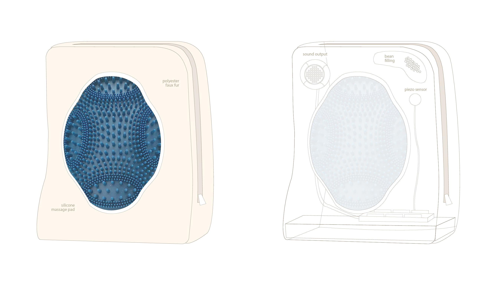

Week 13
Final Project Update
Big Idea: to refine Lemur Buddy in terms of its functionality and practical goal; Work towards testing it with real RTL.
Animal: Ring-tailed Lemur
Reach-Out Process Updates:
1. Duke Lemur Center Research Program - getting in touch with
program director for a potential testing
2. San Diego Zoo RTL
Technicians - waiting for a round of refined questions
The latest project proposal brief and questions:
One main feedback from DLC is:
interacting with the device
could, potentially, catch the eye of the females and set the males
up to be targeted, and such a device could potentially be used for
lemurs that need to be physically separated.
One thing I need to further investigae:The gender-targeted role of
this device: is it truly effective?
1. Consider Sexual Selection theory: a potential hormonal mechanism
of "masculinization" in female lemur development
2. To figure
out the specific scenarios where male lemurs would need such
devices.
3. Potentially, it can still be used for
hospitalization and transition from inidvidual separation back to
the social group environment.
From my research, breeding season seems to be the time where male lemurs are in more of a stress as they are in competition for females, and their scent diveristy shows their genetic complexity, which affects how females make decisions when picking a partner as well.

Potential new form and scale:

Materials exploration:
Some of the prior examples of what Duke Lemur Center uses for research and testing:

For the concave-grooming side, the material to be consider is silicone, taking inspiration from pet tools that are meant to be easy to clean.
For the convex side, since the materials are trying to be similar to the fur, it's still to be decided.
New Form? A video of observation of the mutual grooming behavior:
Idea sketch:
Final Prototype
Shape and form:
the outer coat can be unzipped, and the material is 100% polyester, which is easy for washing and maintaining.
Electronics(pur audio feedback & a piezo sensor as touch input):
Fluid bean bag: